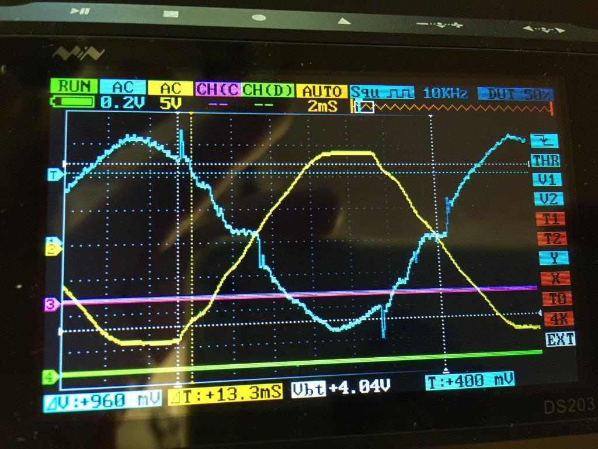
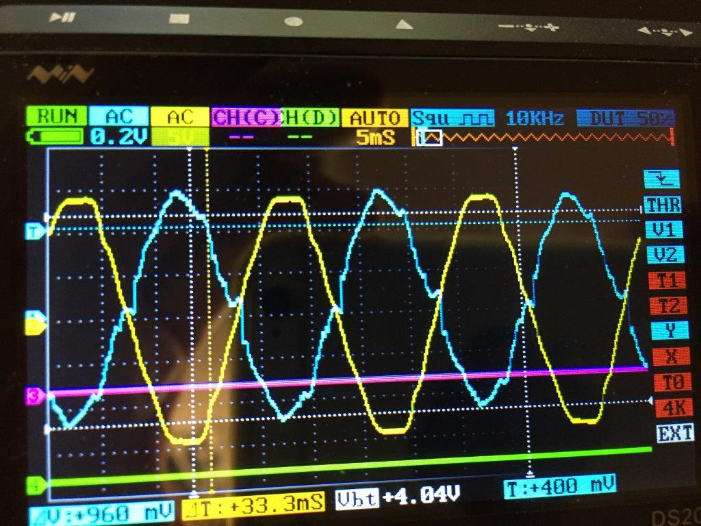
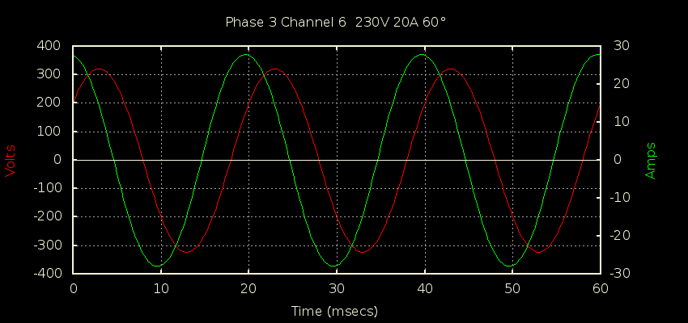
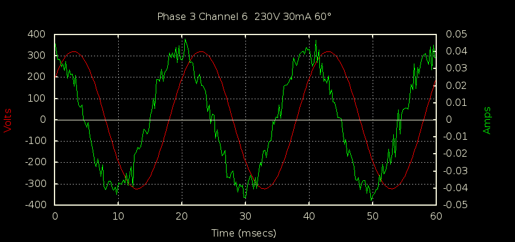

Its the middle of the night here and I have just unplugged the Solar CT and plugged it into my scope to see how it is that OEM measures 33ish Watts of phantom generation from my 12 Renesola Micro Inverters.
I've attached the scope trace below, the yellow trace is from the power adapter and the blue trace is from the unplugged CT.
Is there any way of measuring this with an EMONTX V3.4?
Re: Micro Inverter Phantom Power
But you're saying that the emonTx IS measuring that - 33 W ? ! ! !
Do you want to rephrase the question, and be a bit more explicit? The emonTx ought to be good to measuring some, but probably not the highest frequency component, of those harmonics - if that's indeed what they are and not noise. But the absence of an anti-alias filter will confuse matters somewhat.
What burden were you using - it's impossible to work out the calibration without that.
Re: Micro Inverter Phantom Power
That shows as 33 Watts of generation when it's plugged into the EMONTX, even in the middle of the night in almost total darkness. The trace was taken without a burden and it has a 120 ohm burden when plugged in. This is a 3kw system comprising of 12 x 250w micro inverters.
I wonder why it measures it as generated power, which goes away if I turn the isolator off on the roof.
i'll measure it again with the scope in parallel with the EMONTX so the peak to peak measurements bear some relation to what it's seeing
Re: Micro Inverter Phantom Power
Its measuring 33W of generation in the middle of the night.
I've put the scope in parallel with EMONTX V3.4, Burden 120Ohm, results are attached. Mains input is in yellow, Solar CT is in blue
Why is it showing what must be a small power draw as a positive value?
Re: Micro Inverter Phantom Power
In that trace it looks like your current signal is leading by more than 90°, which would be recorded as an export. I suspect what's actually happening is that your inverter at night is a very capacitive load...plenty of VARs and not many Watts. Because of the very low current flowing through the CT, it's operating in a region where it's phase error is worse than normal, so what should be showing up a lead just below 90° is flipping over in the next quadrant, which turns a small import into a small export (or larger export depending on how far past 90° it goes).
Re: Micro Inverter Phantom Power
I suspect what's actually happening is that your inverter at night is a very capacitive load...plenty of VARs and not many Watts.
Hi dBC
That agrees with what I see from my Enphase microinverters at night. The PF is ~.07
my TED 5000 and emonTX show it as ~45 W of generation.
Bill
Re: Micro Inverter Phantom Power
As another data point, at night my SolarEdge inverter gets clocked as consuming:
For a grand total apparent power of 16.4 VA, and a PF of 0.16.
Re: Micro Inverter Phantom Power
Thanks for the replies, is this something in the too hard to make work properly bucket?
Right now I have the first line in the feed as minus 32 which makes most of it go away, although the calibration at low levels is then out.
Re: Micro Inverter Phantom Power
Hi Kevin,
This may already be your intended use of the allow positive process if you get it working (http://openenergymonitor.org/emon/node/10764) but just incase it isn't, The effect of the -32 calibration can be minimized if you use -32 allow positive +32 so that any readings below 32w are ignored whilst getting a full reading on the rest of the scale from 33w upwards.
Paul
Re: Micro Inverter Phantom Power
Hi Paul,
that is indeed my intended use of it, I like your thinking and will experiment if anyone fixes the "allow positive" setting
Now to deal with one of my new Micro Inverters that gets upset if the sun gets too strong - sigh!
Kevin
Re: Micro Inverter Phantom Power
There might be a few things you can do to compensate for the sensor phase shift, especially since you have the luxury of a scope. Did you calibrate for phase angle? (Step 4. here: http://openenergymonitor.org/emon/buildingblocks/calibration) and if so, at what load level?
When there's plenty of sun about, what power factor do you currently read on that circuit?
If you're feeling particularly experimental, you could try modifying the code to permit a dynamic phase angle adjustment, based on the current current. I'm not sure if anyone has played with that.
Re: Micro Inverter Phantom Power
"If you're feeling particularly experimental, you could try modifying the code to permit a dynamic phase angle adjustment, based on the
currentcurrent at that moment."That's a possibility that I've thought of, but it's very hard to get an accurate value of phase error at low currents, and that's where the phase error is not only getting larger, but also changing extremely rapidly. So matching a look-up table to a particular CT could be an "interesting" experience.
If cost is not a primary consideration, upgrading to a "revenue" grade CT would most likely be a surer way to proceed.
Re: Micro Inverter Phantom Power
I did calibrate for phase angle using a sketch I found however I ended up reverting it to the stock 1.7 last time I calibrated to try and get around non linearity. The non linearity is something I need to investigate further as the closest I could get it over 750-2900 watts was +90 at the low end and around -100 at the high end. This was using a 750/1200/2200W electric fire and a 3KW immersion ran through a multimeter. I also put the burdens back to the CT4 stock of 120Ohms on the HWC / Spa Heater / Solar channels in case the CT core was getting saturated.
Is there a recommended method of phase calibration?
Re: Micro Inverter Phantom Power
I think your problem is that the phase error is current-dependent, so unless you change your CT for a better (= many times more expensive) one, which will have a lower error over a larger range of currents, you will always have the problem that you can correct it so that it's acceptable at medium-high currents and wrong at low currents, or it's correct at a particular low current and wrong everywhere else.
Don't confuse non-linearity with noise pick-up. There is a certain amount of noise pick-up - in the V3.4 it is noticeably better than its predecessors, but even so at very low currents, the true input might be swamped by noise.
If you increase the burden value, the phase error will get worse, but the ADC errors and noise will get better. You pay your money and you take your choice.
Re: Micro Inverter Phantom Power
You could be right there. I'll do some further tests and compare the results against those in "Building Blocks." I'll also stick the scope in parallel to see if I can see anything else that makes sense. Curiously with this CT I have had to put in a calibration of x0.92 after calibrating it with an electric heater to make the solar monitoring on EMONCMS agree with the figure on the Renesola monitor.
Re: Micro Inverter Phantom Power
0.92 seems like a pretty big discrepancy given I'd expect both the heater and the inverter output to be producing signals with V and I in-phase. Getting that same scope trace you got earlier while it's sunny would confirm if your inverter is doing anything unusual. How many watts was your calibration heater and how many watts is your inverter?
If you were coming in lower than the inverter, you might be able to claim they're being overly optimistic, or displaying DC power, but it sounds like you're reading higher than the inverter?
P.S. When you calibrated to the heater were you actually measuring its power with a trusted meter, or were you just using its nameplate rating?
Re: Micro Inverter Phantom Power
Right now I'm getting 1683watts of generation and the monitor shows 1685, the day's end generation is usually close too. I calibrated with a 750/1200/2200 watt switchable heater and the power to the EMONTX is from the same switchboard (type 2 solar) which right now has nothing turned on apart from the internet router, hot water diverted, spa with heater and main pumps off the pi plus a couple of security lights that are off.
I then found EMONTX reported more energy than the Renesola Monitor.
I have extended all the CT cables using balanced Mic cable with an open screen at the EMONTX end. The solar one is only extended by a couple of feet. Maybe this is causing inaccuracy?
Scope waveforms from the Solar CT attached, Solar is the blue trace, mains adapter output if the yellow trace.
Maybe the shape of the waveform causes EMONTX to overread?


Re: Micro Inverter Phantom Power
Right now I'm getting 1683watts of generation and the monitor shows 1685,
That's witih the mystery x 0.92 in place though, right? It sounds like you pretty much threw out the heater calibratoin, and re-calibrated to your inverter?
I calibrated with a 750/1200/2200 watt switchable heater
And did you have a reliable wattmeter measuring the heater at the time, or did you just use the nominal wattages?
Your traces look nicely 180 degrees out of phase, as you'd expect. It's not exactly a sine wave but it's trying.
Re: Micro Inverter Phantom Power
It is with the 0.92 in place. I calibrated the sketch with the heater, unplugging the programmer from EMONTX each time so it didn't change the voltage seen by EMONTX which I've previously calibrated. I then used the voltage shown on EMONCMS multiplied by the current seen by my true RMS multimeter to work out the power.
I did my main investigation with the HWC diverter circuit on CT3 by first looping out the device and then wiring in a socket instead of the immersion with the meter in series with the load. The closest I could get with this was keeping EMONTX at +-100 with it overreading at the low end showing 810ish watts for a 740ish watt load and underreading at the high end with the 2800Watt HWC showing around 2700Watts.
Once this was done I put a similar value into the Solar channel and tested in the same way. From memory they ended up quite close to each other but as it was late at night I didn't spend too long on it. The next day when the sun arrived I noticed the over read and added in the 0.92 to make it broadly agree with the monitor.
It may well be that for the accuracy I would like I need to run another sketch rather than the standard 10 second one that I've changed to read every second or for that matter purchase another CT, however for now I just want to get the best out of what I've got.
3 of the channels have a 120 Ohm Burden same as CT4 on the standard calibration as I figured the 180 Ohm one I'd worked out could be contributing to non linearity.
Re: Micro Inverter Phantom Power
From a purely theoretical point of view, considering how the waveform is sampled in the ADC and where it sits in relation to the adc steps (which you cannot control and probably drifts with temperature and other factors anyway) , you cannot expect great accuracy a low currents. Here is what the graph looks like.
The amplitude (X-axis) is in ADC counts, the per unit error is the Y-axis, and the Z axis is the offset of the input zero against the ADC step. A standard emonTx & CT gives a signal amplitude of 483 counts at 100 A, so full-scale (X) is roughly 4 A.
Re: Micro Inverter Phantom Power
That's a very interesting graph Robert, do you expect something similar with a 120 Ohm Burden and 0-16A? I guessed that I was better going for 120 rather than 180 for accuracy with my up to 3Kw@236ish loads? Trading less ADC steps for smaller phase errors.
Re: Micro Inverter Phantom Power
Yes, very nice graph!
I was pursuing why there was an 8% error between his two relatively beefy resistive loads(*). Surely an emonTx can do better than that? I suspect there may more issues here than just the normal limited dynamic range issue you get with a 10-bit AtoD.
(*) the calibration heater, and the inverter output while sunny (to the extent that it's almost a sine wave).
Re: Micro Inverter Phantom Power
Burden and current has nothing to do with the graph! It's all about ADC steps and the signal amplitude and offset in relation to them. All the burden & CT ratio does is alter the scale of amps per ADC step.
Re: Micro Inverter Phantom Power
Interesting, is the route to greater accuracy a high burden value as long as there are sufficient steps to cope with the voltage or does phase error come in to spoil things? I assumed 180 ohms was the value for a 3kw load - did I make a mistake in my calculations?
Re: Micro Inverter Phantom Power
0.92 seems like a pretty big discrepancy given I'd expect both the heater and the inverter output to be producing signals with V and I in-phase.
Correct me if I'm wrong, but when a PV system is exporting, (provided his system generates enough energy to export some of it) aren't the voltage and current ~180 degrees out of phase?
Re: Micro Inverter Phantom Power
Correct me if I'm wrong, but when a PV system is exporting, (provided his system generates enough energy to export some of it) aren't the voltage and current ~180 degrees out of phase?
Yes, but apart from that they're in-phase ;-).
Two sine waves that are 180 degrees out of phase, are just as easy to measure and multiply as two that are in phase, you just get a negative answer. In both cases, a small uncorrected phase error in your sensors will have little impact on the result.
But you're right, I should have been clearer, perhaps "in phase, modulo 180°". They're both hugging the X-axis in the power quadrant graph.
Re: Micro Inverter Phantom Power
The transformer errors are in essence dependent upon the flux in the core, and that comes from the primary winding. If you increase the flux from the primary, e.g. by having more ampere-turns, then as the loss components remain roughly the same, they become proportionately smaller and so the percentage errors reduce.
So what sort of accuracy are you talking about? It's not clear cut, as in all things in engineering, there are balances and trade-offs. If you want minimal errors from your CT, you work it into as low a value of burden as possible, and you operate it where it's designed to operate - and that's probably in the top ⅔ of it's range. If you want minimal phase errors over a wide range of currents up to the same maximum, you need a 'better' CT than the YHDC one. If you want minimal phase errors over a smaller range of currents up to a lower maximum, you need one that's 'better' but also has a lower primary current rating, and that one will probably be less expensive that the other, but still more expensive than the YHDC. If you don't need a split-core CT, then you'll generally get better and more consistent performance from a ring-core one.
If you want minimal quantization and encoding errors in the ADC, then you need a higher voltage that's closely matched to its operating range, which implies a higher value of burden. Then the CT is transferring more power and the errors increase. Unfortunately, you can't have it both ways.
Re: Micro Inverter Phantom Power
Thanks for the comprehensive reply. One final question, is there a point at which heating becomes an issue with multiple turns through a CT with a continuous 3KW load? Theoretically I could go for 7 turns if there is space which would put the CT into the 87.5A range compared to 12.5A for a single turn but my guess is inductance heating rears its head.
My solar is fed in on a 6mm cable and I can extend this inside the distribution board where the CT lives to pass it through multiple times. Similarly the HWC diversion can be extended into multiple turns.
Re: Micro Inverter Phantom Power
re: Robert's excellent trade-off summary, I think there's a bit of an industry convergence towards 333mV CTs, and in that space you can get some surprisingly good results. Most of Robert's trade-offs are exacerbated in the emonTx space because of the AtoD limitations: a relatively high voltage required to exercise its full range, and even when you manage that, you're only ever going to get back a 10-bit result.
If you want some serious dynamic range, then get a dedicated high speed 24-bit AtoD for each channel, an input stage designed for a Vpeak of 0.5V, some good anti-aliasing filters, some serious DSP horsespower to deal with all that data and prepare to be blown away with the results.
I just checked a 20A->333mV split-core CT that's by no means revenue-grade. It's sold as a 1%'er. I set the calibrator to 230V, 60° phase shift, 20A. My precision energy monitor clocked it at:
Then without changing anything else, I switched the calibrator down to 30mA, where my monitor read:
I've added a recent feature to my monitor to let me suck the raw data off it and it then gets piped through gnuplot to produce the waveform. You can see in the attached, (and the numbers above) that the phase shift stayed surprisingly constant. Had I gone down to 20mA that would represent a dynamic range of 1000:1 but my anti-creep feature kicked in so I had to settle for 30mA.


Re: Micro Inverter Phantom Power
That quite an impressive result. I wonder if there is any mileage in making a version of EMONTX with a calibrated 10x op amp in it to reflect the 333mV standardisation? That level of gain could be managed with a simple transistor stage.
Re: Micro Inverter Phantom Power
I reckon that has to be a better way to get the voltage up then just using a bigger burden. I'm pretty sure there's an Atmel Power Meter Application Note around that has a variable gain amp in front of the input. It comes up occasionally in these parts, but I'm not sure if anyone has actually tried it. Quite a few of the AVR devices (like the 2560) have a built-in programmable gain op-amp in front of the AtoD. WIth programmable gain you could potentially do an auto-ranging feature which could well extend your dynamic range.
And all AVRs (at least all the ones I know of) support an external Vref, so that may be another way to go. There are an abundance of voltage reference chips to choose from. So rather than bringing the CT input up to Vref, perhaps you could take Vref down to a value that perfectly matches your input stage.
Re: Micro Inverter Phantom Power
" I'm pretty sure there's an Atmel Power Meter Application Note around that has a variable gain amp in front of the input."
There is: "AVR465: Single-Phase Power/Energy Meter with Tamper Detection" (PDF)
The YHDC SCT-013-000 is rated to 100 A, so I'd expect it to be quite happy at 100 A indefinitely. Therefore, provided that you have room for the additional turns, then by far the easiest and cheapest way to improve your accuracy is to do that.
I've taken it up to 250 A-t, and then it does get warm. That was with 50 turns of single strand enamelled copper wire carrying 5 A, but from a 6.5 V transformer. DON'T DO THAT with mains voltage!
Re: Micro Inverter Phantom Power
Quite a few of the AVR devices (like the 2560) have a built-in programmable gain op-amp in front of the AtoD.
Not only a programmable gain amplifier, but a double ended ADC too:
openenergymonitor.org/emon/node/2542
I'd hoped that one would have seen more interest/development. Seemed like a good idea.
Re: Micro Inverter Phantom Power
Thanks Robert, I will do a few experiments next week and work out what works best in my situation. When my Sparky comes out he's happy to extend the solar live feed using a crimp so I'll work out how many turns of 6mm cable will fit in the CT and then recalculate the burden for maximum ADC steps. 7 turns may be optimistic for space reasons.